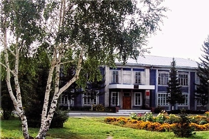

Добро пожаловать
Наш сайт создан в целях обеспечения информационной открытости
деятельности Учреждения. Здесь вы сможете ознакомиться с нормативно-правовыми документами,
регламентирующими деятельность учреждения, узнать о направлениях деятельности и работе структурных подразделений,
быть в курсе свежих новостей, а также оставить свой отзыв или предложение.
Нам интересно Ваше мнение и мы с благодарностью рассмотрим предложения и идеи относительно информации размещенной на сайте.
Основная наша задача состоит в том, чтобы каждый человек, оказавшийся в трудной жизненной ситуации,
своевременно получил социальную помощь и защиту, которые определены законом.
Директор КГБУСО "Комплексный центр
социального обслуживания населения Павловского района"
Елена Сергеевна Сазонова